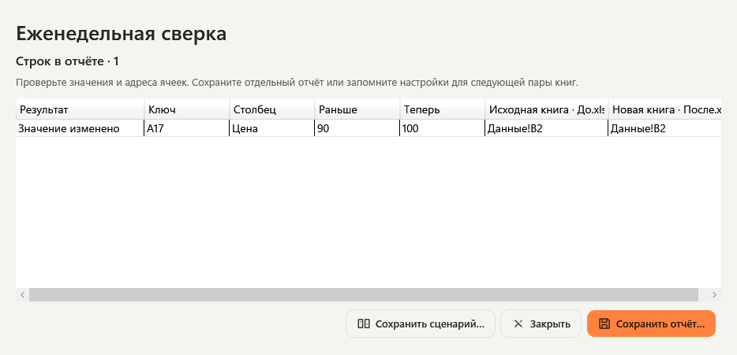

Compare two price lists by product code
Download two small workbooks and reproduce three differences. The rows move, but the product codes still identify each item.
Download the two workbooks
A supplier sends a revised price list and moves two items. Comparing row 3 with row 3 would put different products side by side. A product code lets you follow the item across both sheets.
Both workbooks contain synthetic data. Place them in one project folder. Reconciliation uses OSTUM Pro, which unlocks permanently for this installation and Windows user after a one-time check of a subscription to the developer’s Telegram channel.
Run the comparison
- Type Сверь две таблицы Excel in chat. Select your project folder and review the folder access prompt. The Windows UI is in Russian.
- Choose
price-before.xlsxas the original andprice-after.xlsxas the new file. On both sides choose the sheet Прайс (price list) and key column Артикул (product code). - Review the old and new values and the cell addresses. Choose Сохранить отчёт to create a separate XLSX report.
Check the three differences
| Product | Difference | Evidence |
|---|---|---|
| A17 | Price goes from 90 to 100 RUB | Прайс!B2 in both files |
| D42 | Row removed | Прайс!A5 in the old file |
| E53 | Row added | Прайс!A5 in the new file |
A17 is a product identifier here. Its price lives in cell B2. B24 and C31 swapped positions and kept their values. The OSTUM comparison engine returned the three differences above when run on these exact downloads.

Reuse the settings
Choose Сохранить сценарий to save the sheet and key-column settings in this project. For the next pair, type Запусти сценарий сверки and select the new files. If a workbook changes after the preview, run the comparison again before saving the report.
Keep the expected cell changes beside the two workbooks during a trial run. Printable four-product test sheet.